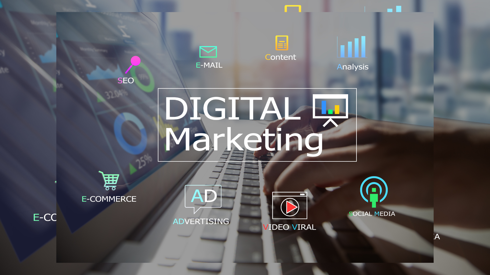
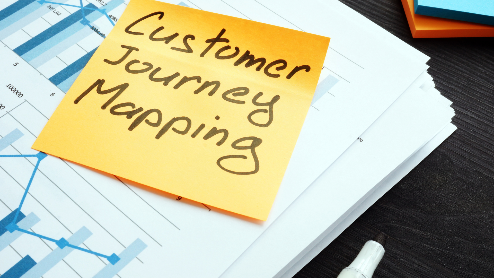
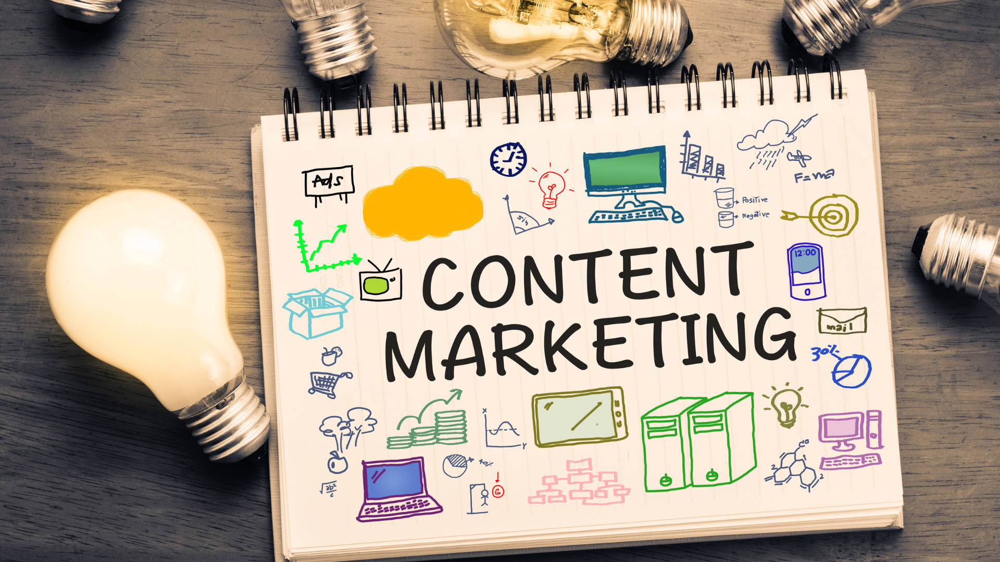
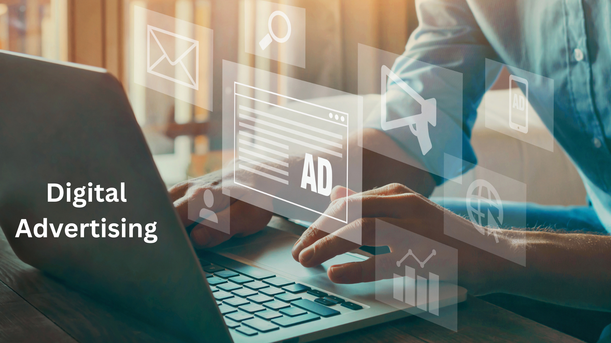
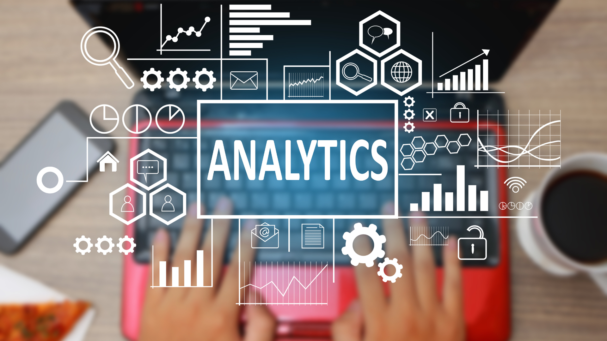

Course Introduction:
Welcome to "The Handbook of Digital Marketing" course, your comprehensive guide to mastering the essentials of digital marketing. From email marketing to social media, content marketing to SEO/SEM, this course covers the core topics and strategies needed to succeed in the digital landscape. Gain practical skills, learn best practices, and unlock the potential of digital marketing to achieve your business goals. Let's get started on this exciting journey into the world of digital marketing.

Chapter 1: Digital Marketing Fundamentals
1.1 The 4Ps of Marketing:
In this lesson, we will delve into the foundational elements of marketing - product, price, place, and promotion. You will learn how these elements apply to digital marketing and how they influence the success of your digital campaigns. We will explore strategies for developing compelling products or services, setting effective pricing strategies, choosing the right digital channels for distribution, and creating persuasive promotional messages.
1.2 Digital Marketing Overview:
This comprehensive overview will provide you with a solid understanding of digital marketing and its significance in the modern business landscape. We will explore the evolution of digital marketing, the shift from traditional to digital channels, and the advantages of leveraging digital platforms to reach and engage with your target audience. You will gain insights into the various digital marketing strategies and tactics available, including search engine optimization (SEO), pay-per-click (PPC) advertising, social media marketing, content marketing, and more.
1.3 Trends Powering Digital Marketing:
Stay ahead of the curve by exploring the latest trends and technologies that are driving digital marketing forward. We will examine emerging trends such as artificial intelligence (AI) and machine learning, voice search optimization, chatbots and conversational marketing, influencer marketing, and personalized marketing strategies. By understanding these trends, you will be better equipped to adapt your digital marketing efforts and seize new opportunities in the ever-changing digital landscape.
1.4 Digital Marketing Concepts:
Dive deeper into essential concepts that underpin successful digital marketing campaigns. We will explore target audience identification and segmentation techniques, creating accurate buyer personas, understanding customer behavior and preferences, and mapping the customer journey. By mastering these concepts, you will be able to tailor your digital marketing strategies to effectively engage and convert your target audience.
1.5 Digital Marketing Types:
Discover the different types of digital marketing and their unique characteristics. From search engine marketing (SEM) to email marketing, social media marketing, content marketing, affiliate marketing, and mobile marketing, we will explore the strengths and applications of each type. By understanding the various digital marketing types, you will be able to select the most appropriate channels and strategies to achieve your marketing goals.
1.6 Digital Marketing Channels - Part 1:
In this lesson, we will explore the first set of digital marketing channels, including search engine optimization (SEO) and search engine marketing (SEM). You will learn the fundamentals of optimizing your website for search engines, conducting keyword research, running effective PPC campaigns, and measuring the success of your search engine marketing efforts.
1.7 Digital Marketing Channels - Part 2:
In this lesson, we will delve into social media marketing and its impact on digital marketing campaigns. You will discover the major social media platforms and learn how to leverage them to build brand awareness, engage with your audience, and drive traffic to your website. We will also discuss best practices for creating compelling social media content, running paid social media campaigns, and measuring the effectiveness of your social media marketing efforts.
1.8 Digital Marketing Channels - Part 3:
This lesson will focus on additional digital marketing channels, including email marketing, content marketing, affiliate marketing, and mobile marketing. You will learn how to create effective email marketing campaigns, develop engaging content strategies, leverage affiliate partnerships to expand your reach, and optimize your marketing efforts for mobile devices.
Chapter 2: Acquire Core Digital Marketing Skills
Introduction:
In Chapter 2 of "The Handbook of Digital Marketing," we will focus on acquiring essential skills that are crucial for successful digital marketing campaigns. By mastering these skills, you will be able to effectively engage with your target audience, drive conversions, and achieve your marketing objectives. This chapter will provide you with practical lessons and step-by-step guidance to develop core competencies in digital marketing.
2.1 Learn to Create Customer Journey Maps:

Understanding the customer journey is key to developing effective marketing strategies. In this lesson, you will learn how to create customer journey maps that visually depict the various touchpoints and interactions a customer has with your brand. By mapping out the customer journey, you will gain valuable insights into customer motivations, pain points, and opportunities for engagement, allowing you to tailor your digital marketing efforts to better meet their needs.
2.2 Create Your First Sales Funnel:
A sales funnel is a visual representation of the customer's journey from initial awareness to final conversion. In this lesson, you will learn how to create a sales funnel that guides prospects through each stage of the buying process. You will explore the different stages of a sales funnel, including awareness, interest, decision, and action, and discover strategies to optimize conversions at each stage. By understanding and optimizing your sales funnel, you can enhance your digital marketing campaigns' effectiveness and drive more conversions.
2.3 Fill This AIDA Model Template:
The AIDA model (Attention, Interest, Desire, Action) is a classic marketing framework that outlines the stages a customer goes through before making a purchase. In this lesson, you will learn how to fill out an AIDA model template to craft persuasive marketing messages that capture attention, generate interest, create desire, and prompt action from your target audience. By leveraging the AIDA model, you can create compelling and effective digital marketing campaigns that drive engagement and conversions.
2.4 Creating Your Digital Marketing Plan:
A well-defined digital marketing plan is essential for achieving your marketing goals. In this lesson, you will learn how to create a comprehensive digital marketing plan that outlines your objectives, target audience, strategies, tactics, and key performance indicators (KPIs). We will explore the elements of a digital marketing plan, including market research, competitor analysis, goal setting, budgeting, and measurement. By creating a solid digital marketing plan, you can align your efforts, track progress, and optimize your campaigns for maximum impact.
2.5 Digital Marketing in 5 Steps:
Digital marketing can sometimes feel overwhelming with its numerous components and channels. In this lesson, we will simplify the process by breaking down digital marketing into five key steps: identify your target audience, create compelling content, choose the right channels, measure and analyze results, and optimize your campaigns. By following these five steps, you will be able to develop effective digital marketing strategies and achieve tangible results.
Chapter 3: Email Marketing

Introduction:
Chapter 3 of "The Handbook of Digital Marketing" focuses on the power and effectiveness of email marketing. Email remains one of the most widely used and impactful marketing channels, enabling direct and personalized communication with your audience. In this chapter, you will learn the fundamentals of email marketing, understand its benefits, and discover best practices for creating engaging and effective email campaigns.
3.1 Email for the Win - The Why and What of Email Marketing:
In this lesson, we will explore the importance of email marketing and why it should be a crucial component of your digital marketing strategy. You will learn about the various purposes of email marketing, such as building relationships, nurturing leads, driving conversions, and increasing customer retention. Additionally, we will discuss the different types of emails commonly used in marketing campaigns and how they contribute to overall success.
3.2 Five Reasons Why You Need an Email List:
Building and maintaining an email list is a valuable asset for any marketer. In this lesson, you will discover the five compelling reasons why having an email list is crucial for your business. We will explore how an email list provides a direct line of communication with your audience, enables personalized messaging, supports customer segmentation, enhances customer loyalty, and delivers a high return on investment (ROI).
3.3 Benefits of Email Marketing:
Email marketing offers numerous benefits that can positively impact your business. In this lesson, we will delve into the advantages of using email as a marketing channel. You will learn how email marketing allows for targeted messaging, drives website traffic, increases brand awareness, nurtures customer relationships, and supports customer journey optimization. Understanding these benefits will help you leverage email marketing to its full potential.
3.4 The Art of Effective Email Marketing:
Creating compelling and engaging emails is crucial for success in email marketing. In this lesson, you will discover the art of crafting effective email campaigns. We will discuss key elements such as subject lines, personalization, storytelling, persuasive copywriting, and compelling calls-to-action. You will learn techniques for capturing attention, building interest, generating desire, and encouraging action through your email content.
3.5 Best Practices and Tips for Better Email Marketing:
To optimize your email marketing campaigns, it is essential to follow best practices and implement proven strategies. In this lesson, we will explore a range of best practices and provide practical tips to enhance the effectiveness of your email marketing efforts. We will cover aspects such as email design, mobile optimization, email deliverability, list segmentation, A/B testing, and automation. These tips and best practices will help you achieve higher open rates, click-through rates, and conversions.
son, we will delve into the advantages of using email as a marketing channel. You will learn how email marketing allows for targeted messaging, drives website traffic, increases brand awareness, nurtures customer relationships, and supports customer journey optimization. Understanding these benefits will help you leverage email marketing to its full potential.
3.4 The Art of Effective Email Marketing: Creating compelling and engaging emails is crucial for success in email marketing. In this lesson, you will discover the art of crafting effective email campaigns. We will discuss key elements such as subject lines, personalization, storytelling, persuasive copywriting, and compelling calls-to-action. You will learn techniques for capturing attention, building interest, generating desire, and encouraging action through your email content.
3.5 Best Practices and Tips for Better Email Marketing: To optimize your email marketing campaigns, it is essential to follow best practices and implement proven strategies. In this lesson, we will explore a range of best practices and provide practical tips to enhance the effectiveness of your email marketing efforts. We will cover aspects such as email design, mobile optimization, email deliverability, list segmentation, A/B testing, and automation. These tips and best practices will help you achieve higher open rates, click-through rates, and conversions.
By engaging with the lessons in Chapter 3, you will gain a comprehensive understanding of email marketing and its significance in your overall digital marketing strategy. You will learn how to build and leverage an email list effectively, create engaging email campaigns, and implement best practices to maximize your email marketing results. With these skills, you will be able to nurture relationships with your audience, drive conversions, and achieve your marketing goals through the power of email marketing.
Chapter 4: Social Media Marketing
Introduction:
Chapter 4 of "The Handbook of Digital Marketing" focuses on the dynamic and influential world of social media marketing. Social media platforms have revolutionized the way businesses engage with their target audience, build brand awareness, and drive customer engagement. In this chapter, you will explore various aspects of social media marketing, from creating engaging content to leveraging social media accounts effectively.
4.1 A Guide to Using Social Media:
In this lesson, we will provide you with a comprehensive guide to understanding and utilizing social media platforms for marketing purposes. You will learn about the different social media channels available, their unique features, and their respective target audiences. We will discuss the importance of social media marketing as a means to connect with your audience, build brand presence, and drive website traffic.
4.2 The 5-Phase Social Media Energy:
Social media marketing is a continuous process that involves different stages and strategies. In this lesson, we will introduce you to the concept of the 5-phase social media energy framework. You will learn how to plan, create, engage, analyze, and optimize your social media marketing efforts effectively. Understanding these phases will help you develop a cohesive and results-driven social media strategy.
4.3 The 7 Hidden Strategies in Social Media Marketing:
Beyond the surface-level tactics, social media marketing offers hidden strategies that can significantly impact your success. In this lesson, we will unveil seven key strategies that can take your social media marketing to the next level. We will explore techniques such as influencer partnerships, user-generated content, social listening, customer advocacy, community building, viral marketing, and social media advertising.
4.4 How to Leverage Your Social Media Accounts for Your Business:
Having a strong presence on social media is essential for any business. In this lesson, we will guide you on how to effectively leverage your social media accounts to achieve your marketing goals. You will learn about optimizing your profiles, developing a consistent brand voice, building a loyal following, and using social media analytics to inform your strategies.
4.5 How to Create Engaging Social Media Content:
Creating compelling and engaging content is crucial to capturing the attention of your social media audience. In this lesson, we will explore various types of content that perform well on social media, such as videos, images, infographics, and interactive posts. You will learn techniques for storytelling, using visual elements, incorporating user-generated content, and crafting shareable and viral content.
4.6 Social Media Marketing Tips:
In this lesson, we will provide you with a collection of valuable tips and best practices for effective social media marketing. From optimizing your posting schedule and using hashtags strategically to fostering engagement and managing customer feedback, these tips will help you enhance your social media presence and drive meaningful interactions with your audience.
4.7 The Social Media Marketing Handbook:
To wrap up Chapter 4, we will introduce you to the social media marketing handbook—a comprehensive resource that serves as your go-to guide for planning, implementing, and optimizing social media marketing campaigns. The handbook will provide you with in-depth strategies, case studies, and practical tips to maximize your social media marketing efforts and achieve your business objectives.
Chapter 5: Content Marketing

Introduction:
Chapter 5 of "The Handbook of Digital Marketing" delves into the realm of content marketing, a powerful strategy for attracting and engaging your target audience. In this chapter, you will explore the fundamentals of content marketing, including branding, content creation, planning, optimization, and the numerous benefits it offers to businesses.
5.1 What is Branding:
In this lesson, we will start by understanding the concept of branding and its significance in content marketing. You will learn how branding shapes your business's identity, establishes a unique voice, and builds a connection with your audience. We will explore elements such as brand positioning, brand values, brand voice, and brand consistency, highlighting their role in content creation and distribution.
5.2 Content Fundamentals:
Creating high-quality and relevant content is at the core of successful content marketing. In this lesson, we will explore the fundamental principles of content creation. You will learn about different content formats, such as blog posts, videos, podcasts, infographics, and ebooks, and understand how to choose the most suitable format for your target audience. We will discuss the importance of storytelling, providing value to your audience, and maintaining consistency in your content.
5.3 Content Planning and Optimization:
To effectively execute a content marketing strategy, proper planning and optimization are key. In this lesson, we will guide you through the process of content planning, including setting goals, identifying target audience personas, conducting keyword research, and creating an editorial calendar. You will also learn optimization techniques such as search engine optimization (SEO), incorporating keywords naturally, and maximizing the impact of your content through effective distribution and promotion strategies.
5.4 Benefits of Content Marketing:
Content marketing offers a wide range of benefits for businesses looking to establish their brand, attract and engage their audience, and drive conversions. In this lesson, we will explore the numerous advantages of content marketing. From increasing brand awareness and credibility to nurturing customer relationships, driving organic traffic, and improving search engine rankings, you will discover how content marketing can positively impact your business's growth and success.
Chapter 6: Influencer Marketing
Introduction: In Chapter 6 of "The Handbook of Digital Marketing," we delve into the dynamic world of influencer marketing. Influencer marketing has emerged as a powerful strategy for businesses to connect with their target audience through influential individuals who have a significant online presence. In this chapter, we will explore the essentials of influencer marketing and how you can leverage it to amplify your brand's reach and impact.
6.1 Influencer Marketing Essentials:
In this lesson, we will provide you with a comprehensive understanding of influencer marketing and its key components. You will learn what influencer marketing is, how it works, and why it has become such a popular strategy in the digital marketing landscape. We will discuss the different types of influencers, including macro, micro, and nano influencers, and the benefits they bring to your marketing campaigns.
Throughout this lesson, you will gain insights into the role of influencers as brand ambassadors, content creators, and trusted voices within their niche. We will also cover the importance of influencer selection, considering factors such as audience relevance, engagement metrics, authenticity, and alignment with your brand values.
By the end of this lesson, you will have a solid foundation in influencer marketing essentials, enabling you to navigate the world of influencer collaborations effectively.
Whether you are a business owner, marketer, or digital strategist, Chapter 6 will equip you with the knowledge and insights needed to leverage the power of influencer marketing for your brand. You will learn how to identify and partner with the right influencers, create impactful campaigns, and measure the success of your influencer marketing efforts. With these skills, you will be able to harness the influence of key individuals in your industry and establish meaningful connections with your target audience.
Chapter 7: Digital Advertising

Introduction:
Welcome to Chapter 7 of "The Handbook of Digital Marketing." In this chapter, we will explore the world of digital advertising and its various components. Digital advertising has revolutionized the way businesses reach and engage with their target audience, offering unprecedented opportunities for precise targeting, measurability, and customization. Whether you are new to digital advertising or seeking to enhance your existing strategies, this chapter will provide you with valuable insights and practical tips to optimize your advertising efforts.
7.1 Types of Advertising Media:
In this lesson, we will introduce you to the different types of advertising media available in the digital landscape. From search engine advertising and social media advertising to display advertising, video advertising, and native advertising, you will gain a comprehensive understanding of each medium's characteristics, benefits, and best practices. We will explore how each type of advertising media can be leveraged to reach specific audience segments and achieve your marketing goals effectively.
7.2 Digital vs. Traditional Advertising:
In this lesson, we will compare digital advertising with traditional advertising methods. You will learn about the advantages and limitations of both approaches and understand why digital advertising has gained significant traction in recent years. We will discuss the key differences in targeting capabilities, cost-effectiveness, reach, measurability, and flexibility between digital and traditional advertising. By the end of this lesson, you will have a clear understanding of why digital advertising is a powerful tool for businesses in today's digital age.
7.3 Content Strategy in Advertising:
Effective advertising requires a well-defined content strategy that aligns with your brand, resonates with your target audience, and drives desired actions. In this lesson, we will explore the essential elements of content strategy in advertising. You will learn how to identify your target audience's needs and preferences, create compelling and persuasive ad copy, and align your messaging with your advertising objectives. We will also discuss the importance of storytelling, visual appeal, and call-to-action (CTA) optimization in driving engagement and conversions.
7.4 Display Advertising:
Display advertising involves the placement of visual ads on websites, apps, and other digital platforms. In this lesson, we will dive into the world of display advertising and explore its various formats, such as banners, pop-ups, interstitials, and native ads. You will learn how to design eye-catching and effective display ads, optimize their placement for maximum visibility, and measure their performance using key metrics. We will also discuss the role of programmatic advertising and real-time bidding in display ad campaigns.
7.5 Tips for Effective Advertising:
In this final lesson of Chapter 7, we will share valuable tips and strategies to enhance the effectiveness of your digital advertising campaigns. You will learn about targeting strategies, ad placement optimization, A/B testing, ad tracking and analytics, and retargeting techniques. We will also discuss the importance of continuous optimization and staying updated with the latest trends and technologies in digital advertising.
Chapter 8: Digital Properties
9
Introduction:
Welcome to Chapter 8 of "The Handbook of Digital Marketing." In this chapter, we will explore the essential aspects of digital properties and their role in your overall digital marketing strategy. Digital properties, such as websites, blogs, vlogs, and podcasts, serve as key platforms for showcasing your brand, engaging with your audience, and driving conversions. This chapter will provide you with valuable insights and practical guidance on creating and optimizing your digital properties to maximize their impact and achieve your marketing goals.
8.1 Website Essentials:
In this lesson, we will delve into the fundamental elements of a successful website. You will learn about the importance of user experience (UX) design, responsive web design, website navigation, and visual appeal. We will explore essential website components, such as homepage, about page, product/service pages, contact page, and calls-to-action (CTAs). Additionally, we will discuss the significance of website speed, mobile optimization, and search engine optimization (SEO) in driving organic traffic and improving user engagement.
8.2 Website Launch Plan - Part 1:
Launching a website requires careful planning and execution. In this lesson, we will guide you through the initial stages of preparing for a website launch. We will cover topics such as defining your website's purpose and target audience, conducting competitor analysis, selecting a domain name and hosting provider, and setting up the technical infrastructure. By the end of this lesson, you will have a clear roadmap for successfully launching your website.
8.3 Example Website Launch - Part 2:
Building upon the previous lesson, in this lesson, we will walk you through the process of designing and developing your website. We will discuss choosing the right website builder or content management system (CMS), selecting and customizing website templates, creating engaging and compelling content, and integrating essential features and functionalities. You will gain insights into best practices for creating user-friendly layouts, incorporating multimedia elements, and optimizing your website for search engines.
8.4 Example Website Launch - Part 3:
In the final lesson of the website launch series, we will focus on the post-launch activities and optimization strategies. You will learn about tracking website performance using analytics tools, identifying areas for improvement, implementing conversion rate optimization (CRO) techniques, and leveraging user feedback to enhance user experience. We will also discuss the importance of regular website maintenance, content updates, and security measures to ensure your website remains up-to-date and secure.
8.5 Website: Do's and Don'ts:
In this lesson, we will highlight the do's and don'ts of website development and management. You will learn about common pitfalls to avoid, such as cluttered design, slow loading times, lack of mobile optimization, and poor navigation. We will provide practical tips for optimizing your website's performance, improving its usability, and delivering a seamless user experience. By following these do's and avoiding the don'ts, you can create a website that effectively represents your brand and converts visitors into customers.
8.6 Structuring the Perfect Blog Post:
Blogging plays a crucial role in content marketing and driving organic traffic to your website. In this lesson, we will guide you through the process of structuring a perfect blog post. You will learn about attention-grabbing headlines, compelling introductions, well-organized content sections, incorporating visuals, and concluding with impactful calls-to-action (CTAs). We will also discuss the importance of search engine optimization (SEO) for blog posts and share tips for optimizing your blog content to improve its visibility in search engine results.
8.7 Vlogs: How to Record and Write Your Podcast:
Video content has gained significant popularity, and vlogs are a powerful medium for engaging with your audience. In this lesson, we will explore the process of recording and writing your podcast. You will learn about selecting relevant topics, scripting your podcast, setting up the recording equipment, creating engaging visuals, and optimizing your vlogs for different platforms. We will discuss the importance of storytelling, authenticity, and consistency in vlogging, and provide tips for connecting with your audience effectively.
Chapter 9: SEO / SEM
Introduction:
Welcome to Chapter 9 of "The Handbook of Digital Marketing." In this chapter, we will delve into the world of Search Engine Optimization (SEO) and Search Engine Marketing (SEM). SEO plays a critical role in driving organic traffic to your website and improving its visibility in search engine results, while SEM involves paid advertising to increase your website's visibility. This chapter will provide you with a deeper understanding of SEO and SEM, their importance, and effective strategies to enhance your website's search engine performance.
9.1 SEO: A Deeper Understanding:
In this lesson, we will explore the fundamental concepts of SEO. You will gain a deeper understanding of how search engines work, the importance of search engine rankings, and the role of keywords in SEO. We will discuss the significance of on-page SEO, off-page SEO, and technical SEO in optimizing your website for search engines. You will also learn about the evolving landscape of SEO and the latest trends and best practices.
9.2 Why SEO for Your Website:
In this lesson, we will delve into the reasons why SEO is crucial for your website's success. You will understand the benefits of organic traffic, the impact of search engine rankings on user behavior, and the long-term value of SEO for your brand. We will also discuss how SEO can complement other digital marketing strategies and contribute to your overall marketing goals.
9.3 Five Rules of SEO:
Building upon the previous lessons, in this lesson, we will explore five fundamental rules of SEO. You will learn about the importance of high-quality and relevant content, effective keyword research and optimization, optimizing website structure and navigation, building high-quality backlinks, and providing a seamless user experience. By following these rules, you can significantly improve your website's search engine rankings and organic visibility.
9.4 Types of SEO Strategies:
SEO encompasses various strategies and techniques to enhance your website's visibility in search engine results. In this lesson, we will explore different types of SEO strategies, including on-page optimization, off-page optimization, local SEO, mobile SEO, and voice search optimization. You will gain insights into the specific tactics and best practices associated with each type of SEO strategy, enabling you to tailor your approach based on your website's needs and target audience.
9.5 Technical SEO:
Technical SEO plays a critical role in optimizing your website's infrastructure and technical aspects to improve its search engine performance. In this lesson, we will dive deeper into technical SEO, covering topics such as website speed optimization, mobile-friendliness, website crawlability and indexing, structured data markup, XML sitemaps, and canonical tags. You will learn how to identify and fix technical issues that may hinder your website's visibility in search engines.
Chapter 10: DM Analytics

Introduction:
Welcome to Chapter 10 of "The Handbook of Digital Marketing." In this chapter, we will explore the world of digital marketing analytics and its significance in driving data-driven decision-making and maximizing the return on investment (ROI) of your marketing efforts. With the increasing availability of data, understanding how to effectively analyze and interpret this data is crucial for optimizing your digital marketing strategies. This chapter will provide you with essential knowledge and techniques to leverage analytics in your digital marketing campaigns.
10.1 Digital Marketing Analytics Essentials:
In this lesson, we will cover the foundational concepts of digital marketing analytics. You will learn about the importance of analytics in understanding consumer behavior, tracking campaign performance, and measuring the effectiveness of your marketing efforts. We will explore key metrics and performance indicators, such as website traffic, conversion rates, engagement metrics, and customer lifetime value. Additionally, we will discuss the role of data visualization in presenting and interpreting analytics data effectively.
10.2 Four Strategies for Digital Marketing Analytics:
Building upon the essentials, this lesson will introduce you to four key strategies for digital marketing analytics. We will explore descriptive analytics, which focuses on understanding past performance; diagnostic analytics, which aims to identify the causes of specific outcomes; predictive analytics, which uses historical data to make future predictions; and prescriptive analytics, which provides actionable insights to optimize marketing strategies. By understanding and applying these strategies, you can gain valuable insights to inform your decision-making processes.
10.3 Key DM Analytics Techniques:
In this lesson, we will dive deeper into specific analytics techniques used in digital marketing. You will learn about attribution modeling, which helps determine the impact of various marketing channels on conversions; cohort analysis, which tracks and analyzes user behavior over time; A/B testing, which allows you to compare different versions of marketing campaigns to identify the most effective one; and sentiment analysis, which assesses customer opinions and emotions from textual data. These techniques will enable you to extract meaningful insights from your data and refine your marketing strategies accordingly.
10.4 Social Media Analytics:
Social media platforms play a significant role in digital marketing. In this lesson, we will explore social media analytics and its importance in measuring the effectiveness of your social media marketing campaigns. You will learn how to track key metrics such as reach, engagement, and conversion rates on popular social media platforms. We will also discuss the tools and techniques available for social media analytics and how to use them to optimize your social media marketing efforts.
10.5 Tips for Better Analytics:
To ensure accurate and meaningful insights from your digital marketing analytics, this lesson will provide you with practical tips and best practices. You will learn about data quality and the importance of clean, reliable data. We will discuss the significance of setting clear goals and aligning analytics with your marketing objectives. Additionally, we will explore the role of data privacy and compliance in digital marketing analytics, ensuring ethical and responsible data practices.
10.6 Tools for Analytics and Increasing ROI:
In this lesson, we will explore various tools and technologies available for digital marketing analytics. You will learn about popular analytics platforms such as Google Analytics and how to leverage their features to track and measure your marketing campaigns. We will also discuss techniques to increase ROI through marketing analytics, including customer segmentation, personalized marketing, and data-driven optimization. By leveraging these tools and techniques, you can maximize the effectiveness of your marketing efforts and achieve higher returns on your investments.
10.7 Benefits of Marketing Analytics:
In the final lesson of this chapter, we will discuss the numerous benefits of marketing analytics. You will understand how analytics can enhance your decision-making processes, optimize marketing strategies, and improve overall campaign performance. We will explore the advantages of data-driven marketing, including improved targeting and segmentation, enhanced customer experiences, and increased efficiency in resource allocation. By harnessing the power of marketing analytics, you can drive measurable results and gain a competitive edge in the digital landscape.
Conclusion:
In conclusion, "The Handbook of Digital Marketing" provides a comprehensive overview of the fundamental concepts and practical skills required in the field of digital marketing. From understanding the 4Ps of marketing and the different types of digital marketing channels to mastering email marketing, social media marketing, content marketing, influencer marketing, digital advertising, website essentials, SEO/SEM, and digital marketing analytics, this handbook covers a wide range of topics.